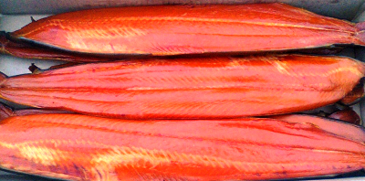
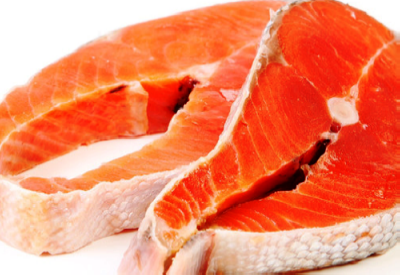

Продукция РК им.Котовского
(Цены на продукцию действуют с 01 января 2018 года)
Нерка

Нерка (боковник филе с кожей) холодного копчения
Цена: 900 руб./кг.

Нерка (стейк) мороженый
Цена: 700 руб./кг.
(Цены на продукцию действуют с 01 января 2018 года)
Нерка (боковник филе с кожей) холодного копчения
Цена: 900 руб./кг.
Нерка (стейк) мороженый
Цена: 700 руб./кг.
Нерка относится к семейству лососевых и является очень многочисленной промысловой рыбой, живущей исключительно в бассейне Тихого океана. Наиболее многочисленная ее популяция - на берегах западной и восточной Камчатки. Широко распространена нерка и на Аляске, а также периодически попадается в северной части Охотского моря и в восточной части Сахалина. Являясь проходным лососем, она рождается из икринки и подрастает в озерах, после чего отправляется в воды океана в поисках пищи. Внешне нерку можно спутать разве только с самкой горбуши, т.к. до захода в пресную воду эти особи похожи как размерами, так и своим серебристым цветом. Сама по себе нерка не крупная рыба, относительно других лососевых. Средние размеры около 40 см, при весе 3 кг. При заходе в пресную воду, в организме нерки запускаются необратимые процессы. Ее тело становится ало-красным, голова темнеет и приобретает зеленоватый оттенок. Челюсти вытягиваются и становятся похожими на клюв с зубами. Чешуя начинает лоснится, рыба медленно умирает.
Существует несколько разновидностей нерки. Наиболее известной и распространенной из которых является серебрянка, очень напоминающая кету. Различить между собой этих двух рыб смогут только очень опытные рыбаки.
Основной пищевой рацион нерки - жирные рачки-каляниды, имеющие ярко-красную расцветку, в связи с высоким содержанием каротиноидных пигментов.
Нерка славится своими вкусовыми свойствами, которые даже выше, чем у кеты и горбуши. Ее мясо обладает очень приятным и нежным вкусом. Благодаря высокой жирности нерки, из нее получаются превосходные копчености, в том числе, и балыки. Очень вкусной является нерка, приготовленная на пару, а еще, достаточно часто из этой рыбы готовят различные холодные закуски и салаты.
Нерка богата практически всеми, необходимыми для человеческого здоровья, витаминами и минералами. В ее состав входят витамины А, Е, РР, D, а также витамины группы В, а также такие важные элементы, как фтор, железо, цинк, хром, никель, калий, магний и фосфор.
Нерка является калорийным продуктом - в ста граммах этой рыбы содержится более ста пятидесяти килокалорий.
Употребление блюд, приготовленных из нерки, оказывает очень благоприятное воздействие на весь организм человека. Мясо нерки обязательно необходимо вводить в рацион питания детей. Оно способствует поддержанию здоровья слизистых оболочек. Но следует помнить, что в связи со своей повышенной жирностью, нерка противопоказана людям, страдающим заболеваниями желудочно-кишечного тракта. Нерка способствует улучшению состояния кожи, волос, а также помогает укрепить кости. К наиболее важным компонентам мяса нерки относятся фтор и фосфорная кислота. Нерку по праву можно отнести к диетическим продуктам. Регулярное употребление ее мяса помогает нормализовать все важные процессы, происходящие в человеческом организме. Нерка является универсальной рыбой, из которой получаются не только замечательные повседневные блюда, но и праздничные, и даже весьма экзотические.
При выборе нерки рекомендуется обращать внимание на некоторые особенности. Окрас брюшка у качественной нерки однородный, без вздутых участков и достаточно плоское. Жабры у тушки не должны быть ярко-красными. Чешуя у свежей тушки ровная и блестящая. Рыбная кожа должна быть без деформаций. При надавливании на тушку, тело не должно продавливаться, не должно быть рыхлым. Рыбный аромат не должен содержать запаха аммиака. Рыбная кожа не должна отставать от мякоти. Покупая нерку в упаковке, необходимо обязательно посмотреть срок годности. Ни в коем случае не покупать рыбу во вскрытых упаковках. Несмотря на то, что внешне она может быть красивой и вкусно пахнуть, продуктом можно отравиться. Замороженная нерка также должна быть однородного окраса, глаза ее должны быть яркими.